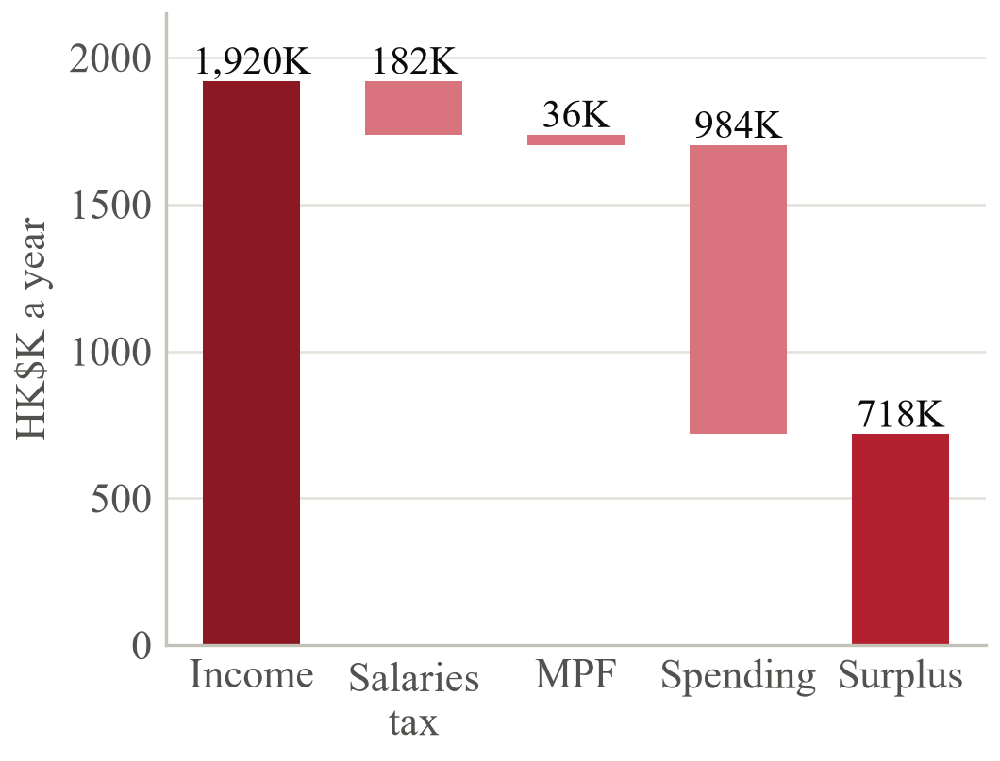

The Wongs start from strength; the risks are concentration and costs outside the budget.

| Measure | Wongs | Verdict |
|---|---|---|
| Savings, after tax | 41% | Strong |
| Reserve, months | 30.5 | Excess |
| Debt to assets | 10% | Low |
| Mortgage to pay | 8.5% | Easy |
| Home and business | 61% | High |
Strong, liquid and lightly borrowed. The parents save HK$718K a year after tax and MPF and hold HK$2.5M in cash: 30 months of spending, against the 6–12 months a household needs. Debt is 10% of assets, and the mortgage costs about 8.5% of gross income. Two risks sit behind the strength. First, concentration: the home and Carmen's business are 61% of the family's assets, and neither pays an income until it is sold or borrowed against. Second, the HK$82K a month excludes profits tax, travel, renovation and medical emergencies, and new cover (§8) takes ≈HK$100K a year.
Put idle money to work before taking more risk. Moving HK$500K from savings accounts at 0.2% into deposits and a money-market fund at about 3% adds ≈HK$14K a year; clearing the HK$85K card balance saves ≈HK$25K of interest if it revolves; voluntary MPF contributions of HK$60K each save ≈HK$20K of tax. If the family has elected joint assessment, separate assessment saves a further HK$18K. The reserve falls to twelve months (≈HK$1.0M) in a joint account both parents can reach.
| Priority | Goal | Measure of success | When |
|---|---|---|---|
| Need | Retire at 65 and 62 on HK$780K | Lasts to Carmen's 89: {{ladder_5_89}} | 2037, 2039 |
| Need | Protect income and health | Gaps in §8 closed; wills signed | 3 months |
| Need | Fund Chloe's degree without debt | HK$2.57M fund ring-fenced | 2028–32 |
| Want | 20–25% of investable assets in ESG | 25%, in SFC-listed funds | 2027 |
| Want | Ryan financially independent | Crypto ≤ 20% of his wealth by 35 | By 2037 |
| Wish | Legacy with purpose | Staged trusts; a scholarship | Ongoing |